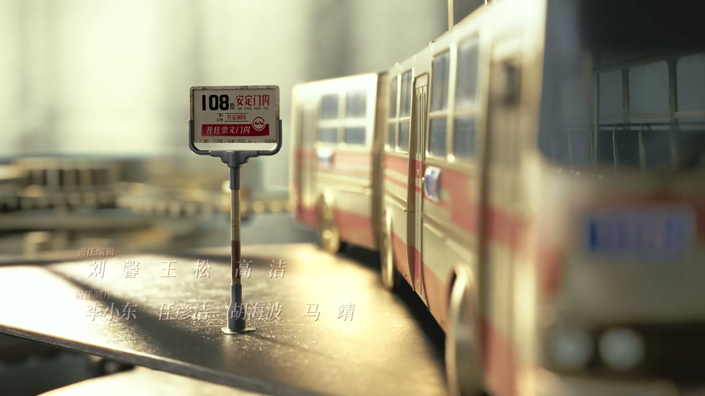
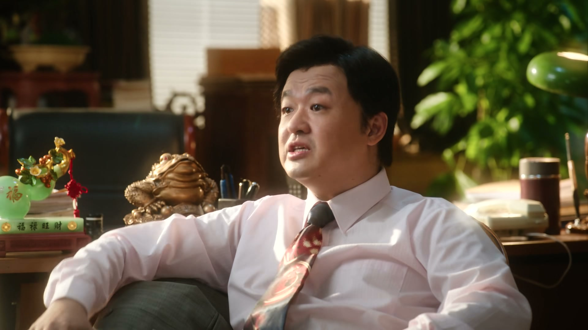
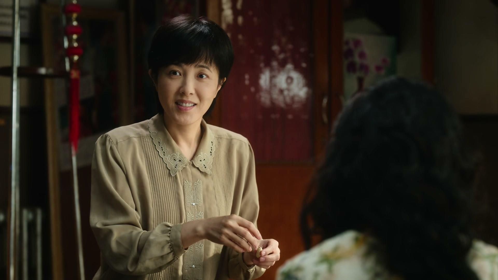
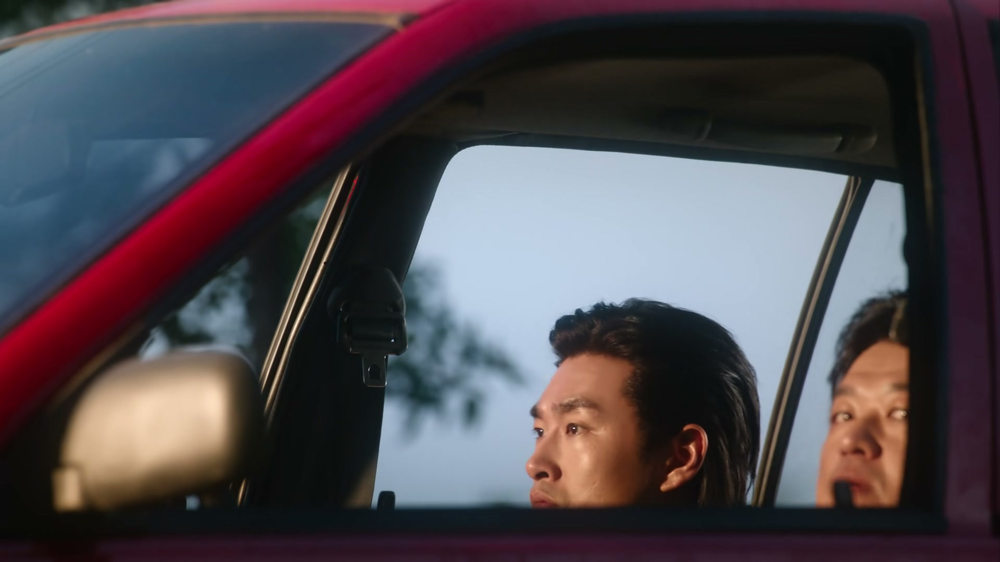
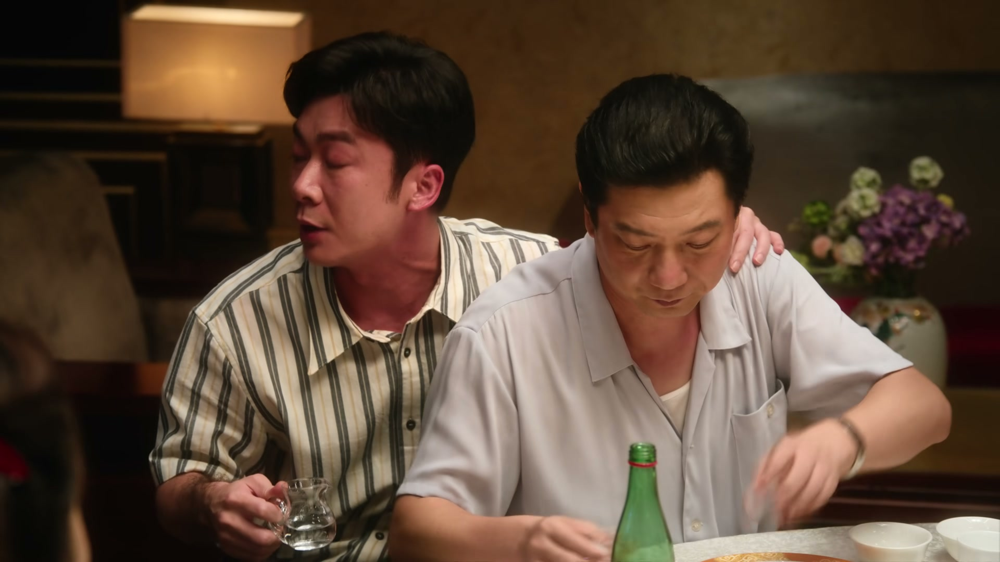
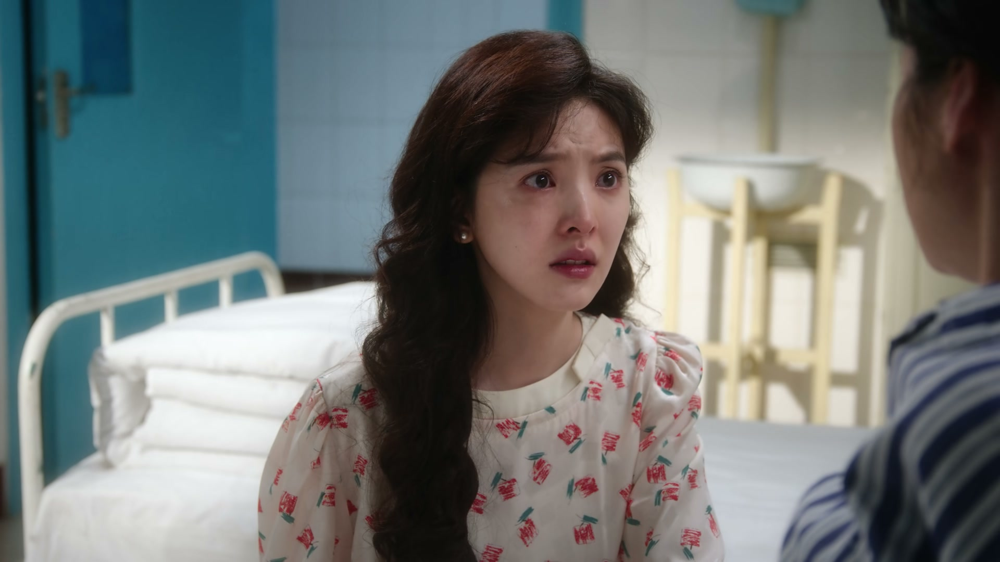
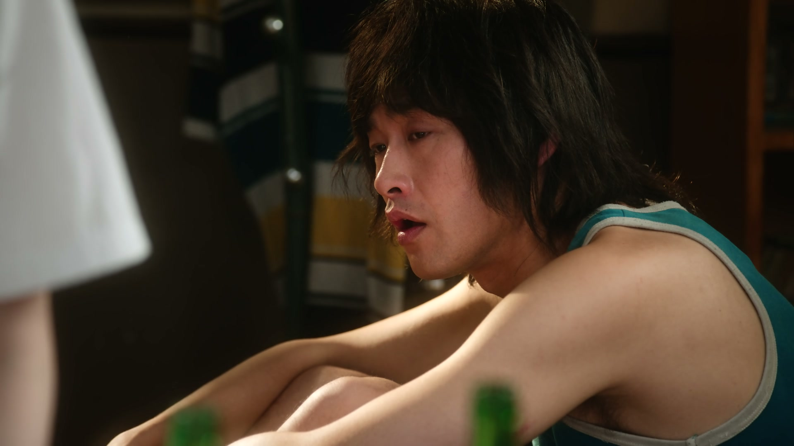
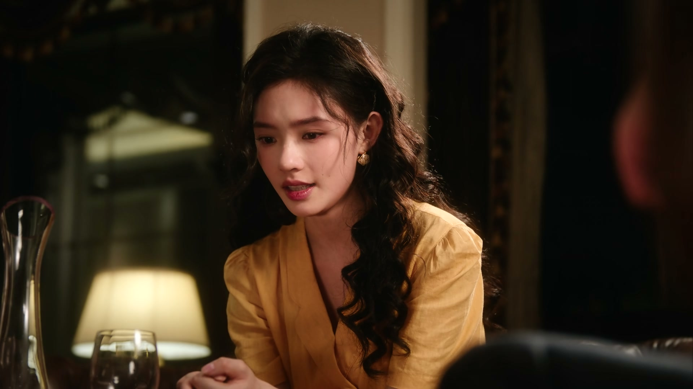
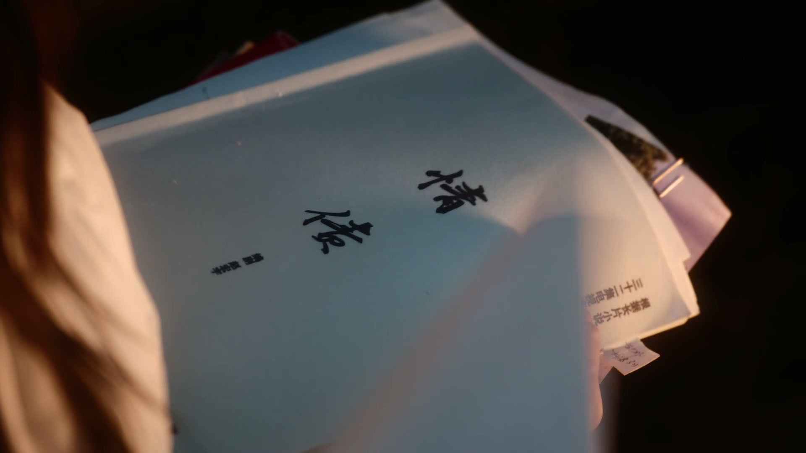
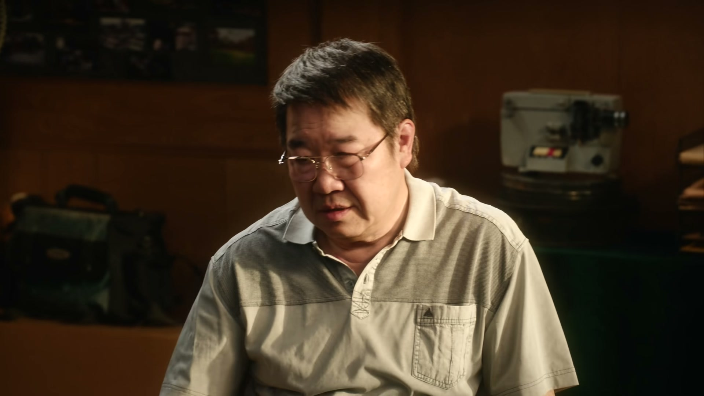

当面识破托儿
情境：徐胜利在洽谈会上点破两个港商考察团是王厂长请来的托，生意当场黄了。
遇到这种情况，可以这样做
- 场面越热闹，越要留意台下的表演。
- 宁可谈崩，也别把家底交给来路不明的人。

Drama Recap · 剧情图文总结
第 24 集 · 一盆冷水
徐胜利识破王厂长设下的两个托儿，卖厂黄了；姜红梅术后戴着耳蜗逐字认声；开机快讯传来，全旅馆举杯，沈冉冉却接到楚总的最后通牒；曹野一句话点醒陶亮亮，而隋老板卷走贷款后杳无音信。
温州的外资洽谈会当场穿帮，两个托儿被徐胜利一眼识破，卖厂的生意就此黄了。北京这边，姜红梅术后恢复，旅馆为开机快讯举杯；沈冉冉在片场被众人捧为“天生的女主角”，楚总的摊牌却逼到眼前。陶亮亮在曹野的提醒下终于想通，隋老板则卷着贷款消失——每个人都挨了一盆冷水。
外资洽谈会进入第二轮，徐胜利越听越不对劲，当众戳穿两个“港商考察团”是王厂长找来的托。王厂长气得直跺脚，谈判不欢而散。庄庄在外面打电话，妈妈叮嘱她好好准备决赛，两个月后的舞台正等着她。
剧里的鸡毛蒜皮，往往是人生的缩影。这些情节不只是故事——当你在现实中遇到同样的处境时，它们能提醒你：先做什么、别做什么、怎么说才有效。
情境：徐胜利在洽谈会上点破两个港商考察团是王厂长请来的托，生意当场黄了。
情境：陶亮亮不忍心压老师傅们的价，徐胜利用葫芦娃爷爷的教训点他。
情境：庄庄回家才发现妈妈病着，妈妈却轻描淡写说是小手术。
情境：隋老板卷款跑路，银行的钱挂在他和翁导名下，天塌下来了。
情境：楚总摊牌要封杀沈冉冉，她依然决绝地选择断掉这条“捷径”。
情境：徐胜利说电影里男女主角在拐角一个向左一个向右，庄庄说只要跟着他就不会走反。
外资洽谈会继续进行，港商代表一边考察一边压价。徐胜利越看越觉得蹊跷，忽然当众点破：这两位“考察团”根本不是真投资商，是王厂长请来的托。
唐厂长愣住，王厂长脸色铁青。生意当场黄了，徐胜利却并不后悔——把厂交给这样的投资人，才真是把老师们傅往火坑里推。
关键台词 · KEY QUOTES

庄庄在外面给家里打电话，妈妈问她什么时候决赛，还有两个月。妈妈在电话那头千叮咛万嘱咐，说要在电视前看着她。
庄庄笑着应下，说自己在徐胜利这边，怕她着急所以赶紧回个电话。话里话外都是母女俩相互的牵挂。
关键台词 · KEY QUOTES

黄老板一口一个价格高，把厂里的货压到了底。陶亮亮看着干了大半辈子的老师傅们，心里过不去，一个劲儿劝徐胜利别把人往绝路上逼。
徐胜利用葫芦娃的爷爷开导他：心肠软的爷爷最后还不是被蛇精抓走了。陶亮亮却说挣钱也不能害人，末了自嘲地补一句——老了我也要吹萨克斯，去公园老太太跳舞那儿吹。
关键台词 · KEY QUOTES

姜红梅的耳蜗手术做完了。医生叮嘱曹广太：三到六个月才能恢复正常听力，才能慢慢开口说话。
曹广太守在床边，一遍遍跟媳妇念叨：等甜甜能叫娘了，得让她慢慢适应这个话。聋了大半辈子的妻子即将听见声音，老曹把眼泪咽回了肚子里。
关键台词 · KEY QUOTES

黄老板不催了，王厂长的电话怎么也打不通。徐胜利越想越不对劲：这王厂长怕是不想见我了。
陶亮亮在一旁替他把话挑明：王厂长也不是什么好人，他不是葫芦娃爷爷，他是蛇精。两个心软的人凑在一起合计，无论如何也得把厂子的底摸清楚。
关键台词 · KEY QUOTES

翁导带来开机快讯，老徐要当导演了，旅馆里瞬间炸开了锅。有人起哄说老徐是这里第一个出头的，回头得请大家看电影。
曹野抢着要为片子画片头，翁导半开玩笑半认真。有人问起女主角，翁导表了态：我现在没能力定女主角，下部戏成了，女主角就用冉冉。一屋子人举杯，却没注意到沈冉冉笑容底下的心事。
关键台词 · KEY QUOTES
角楼下，徐胜利给庄庄讲电影里的分手戏：金顶红墙加上大雪，人生的拐角处一个向左、一个向右。庄庄问他要是咱俩也走反了怎么办。
徐胜利脱口而出：那不会，你往哪走我就往哪走。庄庄心里一暖，又提起妈妈——她的歌唱梦一直是妈妈在背后默默支持，过年回来得仓促，她也想妈妈了。
关键台词 · KEY QUOTES

庄庄径直赶回老家，出现在病房门口。妈妈又惊又急：你不是要参加比赛吗？怎么来了。庄庄红着眼问妈妈病了多久。
妈妈轻描淡写，说现在医疗技术多先进，就个小手术动完就没事了。庄庄哽咽着求妈妈好好休息配合治疗，只有妈妈好起来，她才能安心地去比赛。
关键台词 · KEY QUOTES

沈冉冉给陶亮亮端来饭，陶亮亮没心思吃，满脑子都是怎么让两个人一起好起来。沈冉冉劝他多想想怎么拍戏、拍好戏、拍大戏。
曹野在旁边点破：你娘就是因为太简单了，所以你对挣钱这事没有概念。一句话戳中陶亮亮的软肋，也戳破了他和沈冉冉之间越拉越大的缝隙。
关键台词 · KEY QUOTES

片场里，众人围着沈冉冉夸她那条哭戏演绝了，说这一场戏就把角色给立住了，是天生的女主角。沈冉冉笑得勉强，心里的石头越压越沉。
楚总把她堵住，把话挑明：只要她敢反悔，前期剧本、服化道、摄录美、导演所有部门的前期款都得赔，她在圈里也算废了。他又缓下语气，说自己第一次见面就喜欢她，用尽资源把她捧红，她却不珍惜。
关键台词 · KEY QUOTES

沈冉冉回到家，像被抽空了力气。她对着楚总的人或电话，一字一句：我不需要你给我的这一切，以后不要再联系了。
母亲在电话里数落她这些年花掉多少表演学费，冉冉强撑着一句“我知道了”。艺术之梦在她心里还亮着，可脚下的路已经被堵死。
关键台词 · KEY QUOTES

消息像一记闷棍砸下来：警察查明，隋老板用这个项目骗了无数投资人，卷款跑路了。贷款合同还在，银行的钱还在账上挂着。
翁导红着眼算账：银行贷了五十万，开机前大概花出去十万，其余的全被卷走。徐胜利和庄庄连夜赶去银行查贷款合同，白纸黑字，合同上签的是谁的名，天就塌在谁头上。
关键台词 · KEY QUOTES
识破托儿搅黄卖厂，接到开机快讯又迎来隋老板卷款的晴天霹雳，连夜去查贷款合同。
瞒着众人回家探望生病的妈妈，母女约定好好比赛；也陪徐胜利扛过贷款危机。
片场被捧为天生女主角，转头却被楚总以封杀相逼；决绝断联，也咽下了家里的账单。
为老师傅们心软下不去手，被曹野一句“你对挣钱没概念”点醒，与沈冉冉的裂痕加深。
守着术后恢复听力的姜红梅，一句“让娘适应这个话”藏着半辈子的愧疚与期待。
争着给新片画片头，也是第一个把陶亮亮对钱没概念这件事挑破的人。
以封杀为筹码逼沈冉冉服从，也第一次袒露自己从一开始就喜欢她。
带来开机快讯，许下“下部戏女主角用冉冉”的承诺，却随隋老板跑路而濒临崩盘。
请托儿设局卖厂被识破后失联，连黄老板都等不到他的回音。
以六成资金为饵骗走银行贷款，被警察查明后卷款消失。
徐胜利指着两个托儿一字一句戳穿，把精心编排的卖厂大戏搅了个底朝天。
手术灯熄灭后，曹广太守在床边念叨“让娘适应这个话”，聋了半辈子的媳妇即将听见世界。
老徐要当导演的消息炸开一屋子人，曹野抢画片头，翁导许下女主角承诺，喜剧的高潮在杯盏间到来。
从封杀到告白，楚总把胡萝卜和大棒同时摆在沈冉冉面前，把她逼到墙角。
五十万贷款、十万花销、一夜蒸发，徐胜利查合同的那一晚，是整部戏最冷的一盆水。
贷款合同落在徐胜利名下，隋老板跑路后这笔债不会凭空消失，将一路追着他到温州。
妈妈嘴上说小手术，镜头却不肯给医生一个轻松的特写，病情的分量远比嘴上轻描淡写要重。
托儿被拆、黄老板等不到回音，王厂长这条线的消失，为后续卖厂风波埋下新的暗雷。
从威胁到袒露心意，楚总对沈冉冉的执念没有收手的意思，只会以更失控的方式卷土重来。